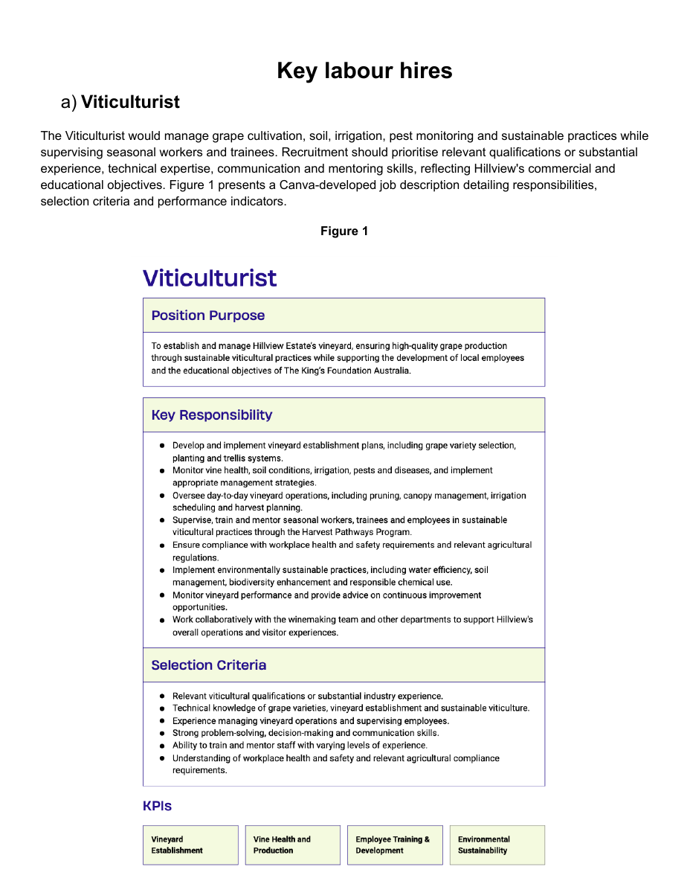
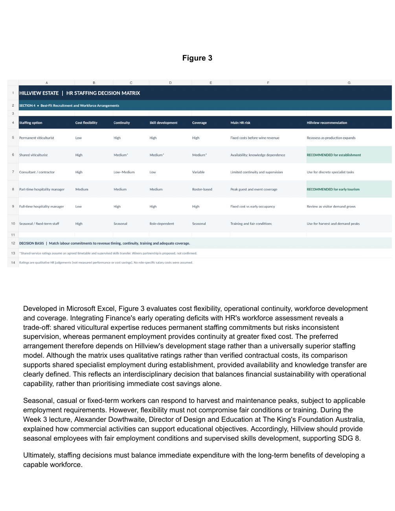

Designing for the person after hiring.
My Viticulturist role specification included technical duties and mentoring seasonal employees. It made me consider how recruitment, supervision and employee development depend on one another.

A role isn't simply filled when someone is hired. I am interested in the decisions that help people do the work well and keep developing.
Onboarding, probation processes and learning support all depend on sound information and thoughtful follow-through. My MQBS3010 HR work tested how I could design those conditions rather than simply recommend hiring more people.
EVIDENCE / MY SUBMITTED HILLVIEW HR WORK · SDG 8
For Hillview Estate, I compared staffing options using cost, flexibility, continuity and development opportunities. I recommended shared specialist viticultural expertise during establishment, while recognising that trainees still needed consistent supervision and knowledge transfer.
The least expensive staffing arrangement isn't automatically the most effective. It only works if employees can still be supported and the operation can deliver.

My Viticulturist role specification included technical duties and mentoring seasonal employees. It made me consider how recruitment, supervision and employee development depend on one another.

The Harvest Pathways Program and Green Skills Academy proposed paid entry-level opportunities and practical training linked to SDG 8. I learned that simply offering training isn't proof it worked. I would look for the skills participants gained and whether those skills opened up future opportunities.
His discussion of commercial activity supporting education helped me weigh seasonal employment and practical learning alongside the vineyard's revenue needs.
Her discussion of introducing new technology reinforced why access to tools is not enough without practical instruction, support and confidence in using them. That shaped my approach to the Green Skills Academy.
Industry perspectives paraphrased from MQBS3010 guest lectures.
I would bring the same thinking to onboarding and learning support: keep records accurate, understand what an employee needs and seek feedback about whether the process helped them perform their role.
SEE HOW I WORK IN A TEAM ↗